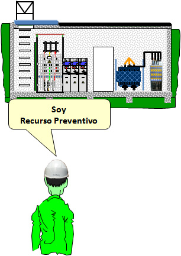

Ejemplo de CONTROLAR:
Se va a acceder a un CT/CR subterráneo que dispone de escalas de “pates”.
¿Se requiere la presencia del Recurso Preventivo?
SI, pues hay riesgo de:
Caídas desde altura.

El Recurso Preventivo deberá comprobar que se adoptan eficazmente las medidas recogidas en procedimiento:
- Comprobar que se dispone de los equipos de protección adecuados.
- Que están en buenas condiciones de uso.
- Que el trabajador, que los utiliza, está formado y los usa correctamente.
- Que el proceso de desplazamiento por la escala se hace de forma adecuada.